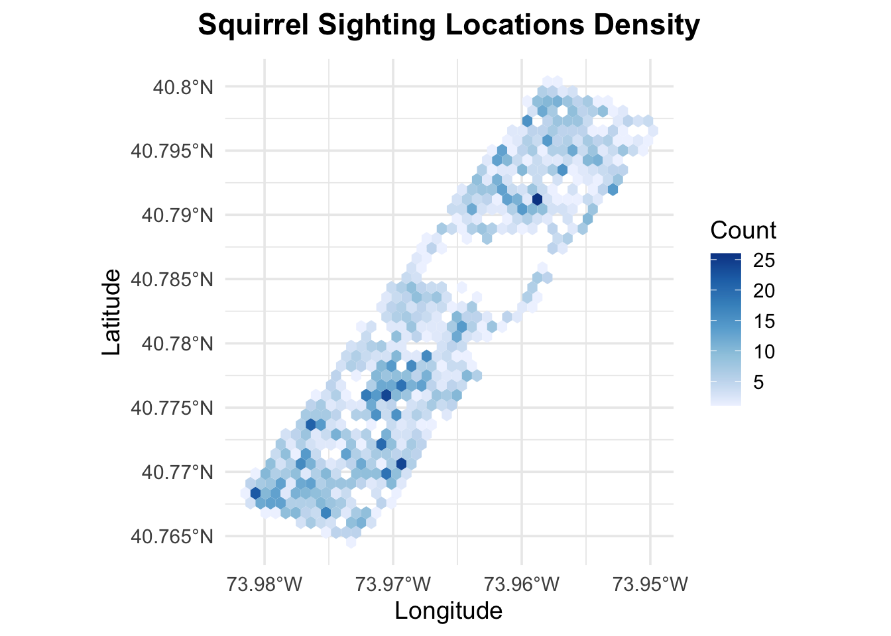
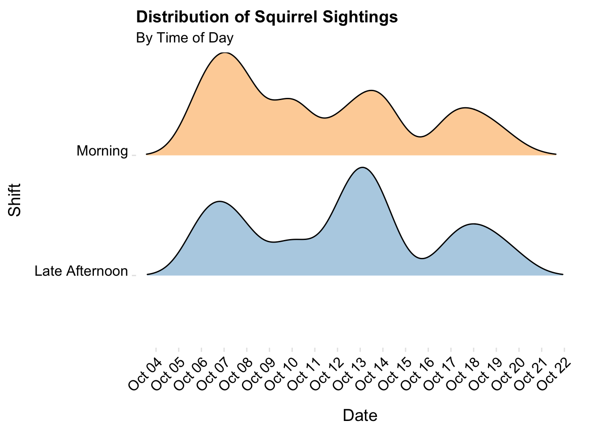
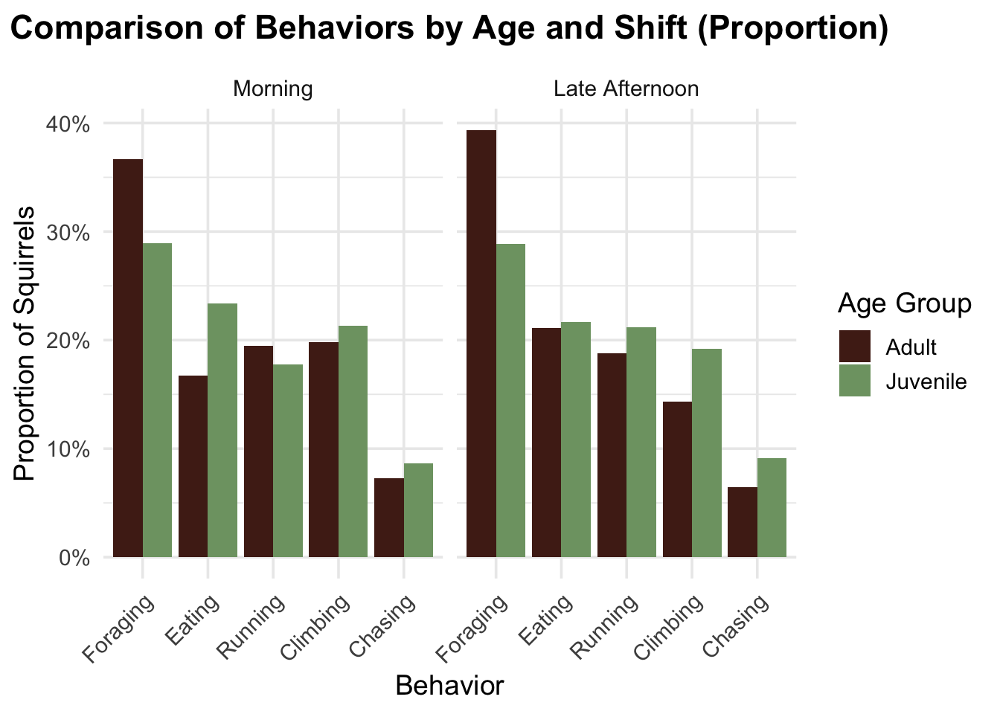
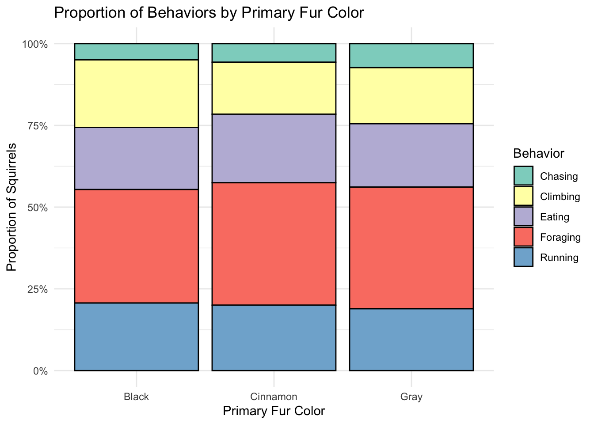
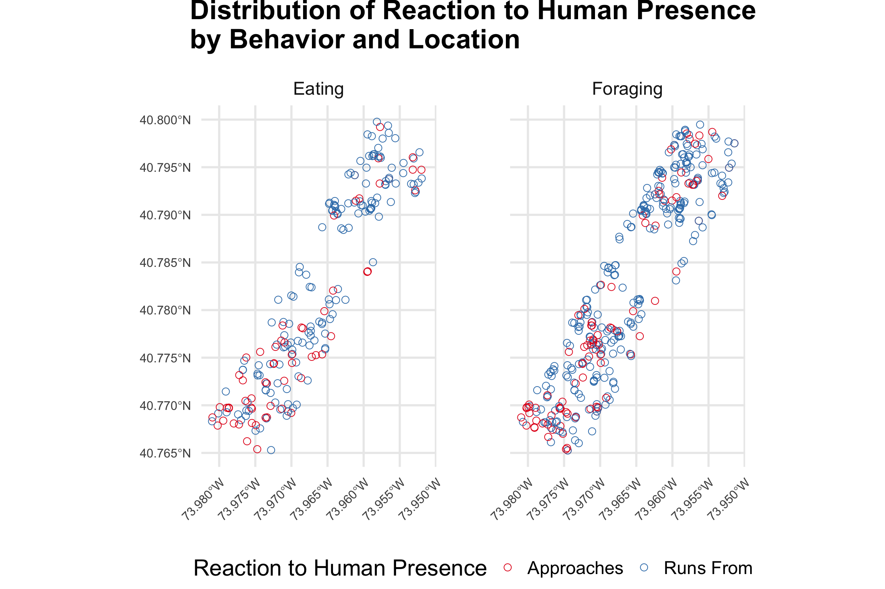
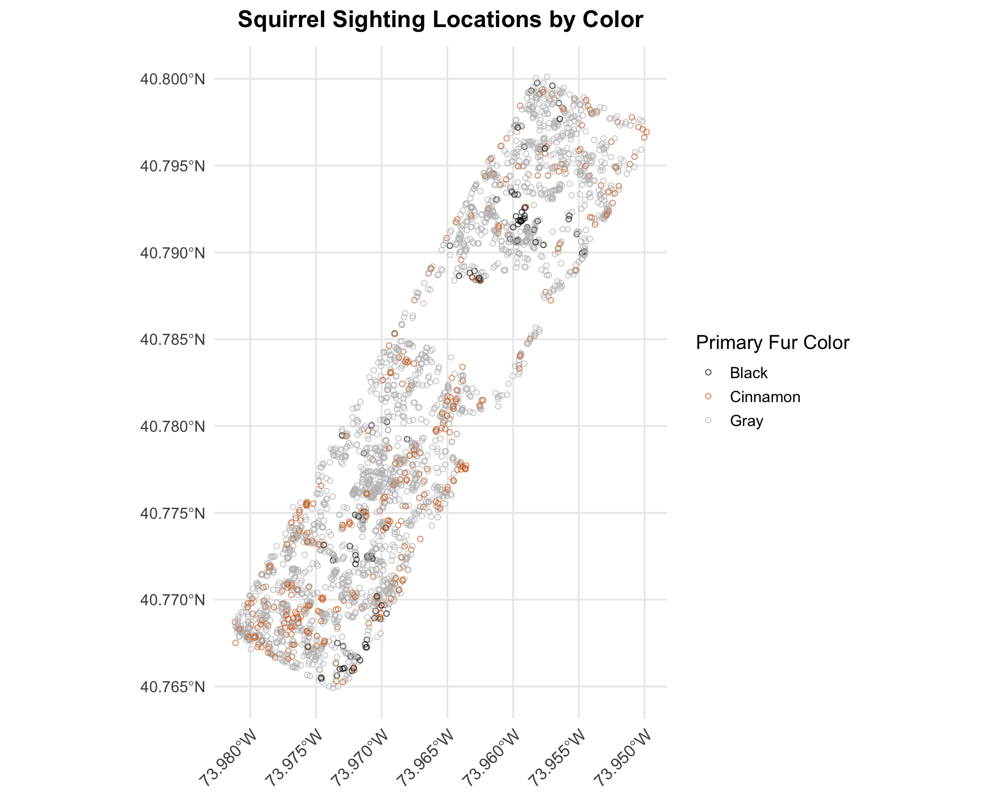
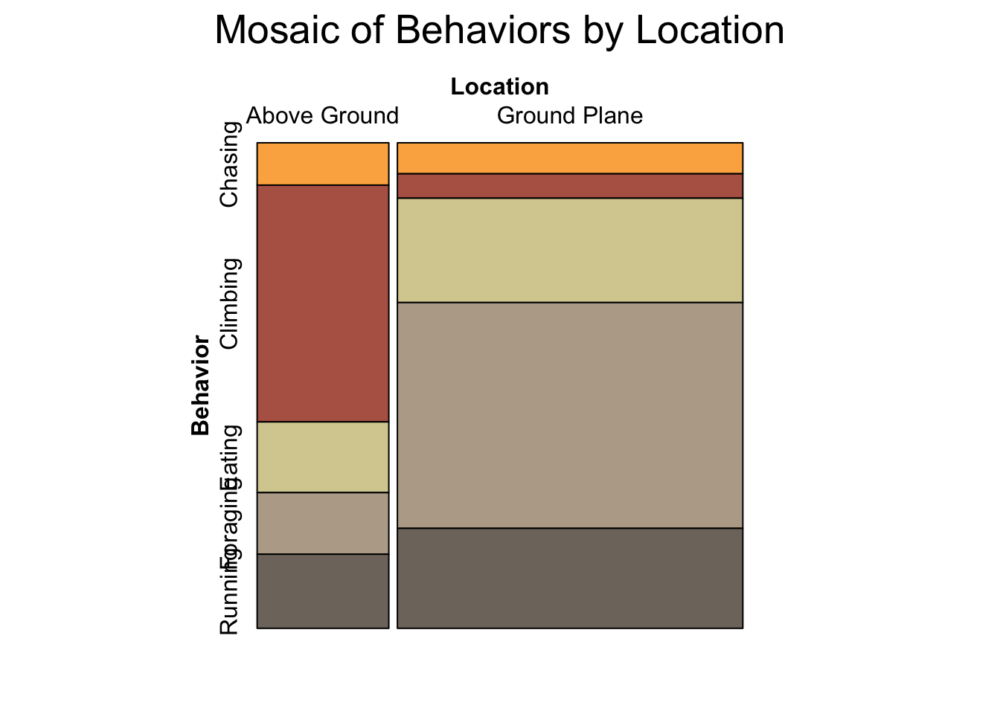

3.1 Eastern Gray Squirrels’ Spatiotemporal Distributions and Activity Patterns in Central Park
Understanding the distribution and behavior patterns of Eastern Gray squirrels in Central Park requires examining multiple factors, from their spatial concentration to their interactions with humans. We break it down to several sub-questions to explore their geographical distribution, temporal activity patterns, environmental preferences, and human interactions to build a comprehensive picture of their presence in the park.
3.1.1 What is the spatial concentration of Eastern Gray squirrel sightings within Central Park?
Code
# Extract coordinates from the point datasquirrel_coords <- squirrel_data |>mutate(coords =str_extract(Lat.Long, "\\(.*\\)"),coords =str_remove_all(coords, "[\\(\\)]"),longitude =as.numeric(word(coords, 1)),latitude =as.numeric(word(coords, 2)) )# Plot the hexagon density plotggplot(squirrel_coords, aes(x = longitude, y = latitude)) +geom_hex(bins =40) +scale_fill_distiller(palette ="Blues", direction =1) +scale_x_continuous(labels =function(x) paste0(abs(x), "°W"), breaks =seq(-74, -73.95, by =0.01) ) +scale_y_continuous(labels =function(y) paste0(y, "°N"), breaks =seq(40.76, 40.8, by =0.005) ) +theme_minimal(14) +labs(title =expression(bold("Squirrel Sighting Locations Density")),x ="Longitude",y ="Latitude",fill ="Count" ) +theme(plot.title =element_text(hjust =0.5)) +coord_fixed()

From this plot, we can see that squirrels are spread throughout the central park, but they tend to cluster more heavily in certain areas. The darker-colored hexagons show spots where more sightings of squirrels are located, suggesting these places might be particularly attractive to them—maybe because of food sources, water, shelter, or other favorable conditions. To be specific, northern side of the Jacqueline Kennedy Onassis Reservoir, middle of the park, and the south-west corner are some of the “hotspot” for squirrels.
3.1.2 How does the frequency of Eastern Gray squirrel sightings vary across different times of day and different dates in Central Park?
Code
# convert the Date column to proper date formatsquirrel_data_ridgeline <- squirrel_data |>mutate(Date =as.Date(Date, format ="%m%d%Y"),# make shift a factor so Morning appears on topShift =factor(Shift, levels =c("Late Afternoon", "Morning")) )# ridgeline plotggplot(squirrel_data_ridgeline, aes(x = Date, y = Shift, fill = Shift)) +geom_density_ridges(alpha =0.6,scale =0.9,rel_min_height =0.01 ) +scale_fill_manual(values =c("Morning"="#FDB462", "Late Afternoon"="#80B1D3") ) +scale_x_date(# Show every date on x-axisdate_breaks ="1 day",date_labels ="%b %d",expand =c(0.01, 0) ) +labs(title ="Distribution of Squirrel Sightings",subtitle ="By Time of Day",x ="Date",y ="Shift" ) +theme_ridges(14) +theme(legend.position ="none",axis.text.x =element_text(angle =45, hjust =1),panel.grid.major =element_blank(),panel.grid.minor =element_blank(),axis.title.x =element_text(hjust =0.5, vjust =-1), axis.title.y =element_text(hjust =0.5, vjust =2) )

The ridgeline plot shows the distribution of squirrel sightings across days in October when the sighting data were collected by volunteers, divided into morning (AM) and late afternoon (PM) shifts. The overall sighting density are similar for morning and afternoon across October, as there are three peaks around Oct 07, Oct13 and Oct 18. Meanwhile, there are still subtle differences within a day between shifts like a higher peak for Morning Oct 07 and higher peak for late Afternoon Oct 13.
There could be several explanations for the patterns observed. Weather is one of them. Different weather conditions across the day could affect if we could encounter squirrels. After we search for historical weather data, on Oct 07 and 08, it was rainy in the late afternoon, so we sighted more squirrels in the morning. In contrast, more sightings happened in the afternoon on 13nd and 14th since it rains in the morning. Data collecting procedure could be another influencing factor. Since this is a volunteering project. People are more available during the weekend, which were dates such as Oct 6-7 and Oct 13-14. Thus the frequency peak at those dates as more vonlunteers were collecting the sighting data.
3.1.3 How are Eastern Gray squirrel’s activity patterns affected by age and environmental features?
Code
# Pivot the columns for plottingbehavior <- squirrel_data |>select(Age, Running, Chasing, Climbing, Eating, Foraging, Shift) |>pivot_longer(cols =c(Running, Chasing, Climbing, Eating, Foraging),names_to ="Behavior",values_to ="Observed" ) |>filter(Observed =="true") |># summarize counts per Age, Behavior, and Shiftgroup_by(Age, Behavior, Shift) |>summarize(Count =n(), .groups ="drop") |># now group by Age and Shift to get the total count for that subsetgroup_by(Age, Shift) |>mutate(Proportion = Count /sum(Count)) |>ungroup()ggplot(behavior, aes(x =reorder(Behavior, -Proportion), y = Proportion, fill = Age)) +geom_bar(stat ="identity", position ="dodge") +labs(title =expression(bold("Comparison of Behaviors by Age and Shift (Proportion)")),x ="Behavior",y ="Proportion of Squirrels",fill ="Age Group" ) +facet_wrap(~Shift) +theme_minimal(14) +theme(axis.text.x =element_text(angle =45, hjust =1),plot.title =element_text(hjust =0.5) ) +scale_y_continuous(labels =label_percent()) +scale_fill_manual(values =c("Adult"="#502419", "Juvenile"="#7ea172") )

The most interesting observation is that foraging dominates squirrels’ sighted behaviors for both adult and juvenile squirrels across the day. The activities related to foods, foraging and eating, take nearly 60% of adult squirrels’ sighted activities and around 50% of juvenile squirrels’ sighted activities. There is even an increase in proportion of foraging and eating sighted duting late afternoon for adult squirrels. This makes sense as these activities relate to survival.
Juvenile squirrels were definitely way more energetic, as they spend more time running, climbing and chasing than adult squirrels during both time of the day.
Code
behavior_location <- squirrel_data |>select(Running, Chasing, Climbing, Eating, Foraging, Location) |>pivot_longer(cols =c(Running, Chasing, Climbing, Eating, Foraging),names_to ="Behavior",values_to ="Observed" ) |>filter(Observed =="true") |>group_by(Behavior, Location) |>summarize(Count =n(), .groups ="drop") mosaic_table <-xtabs(Count ~ Location + Behavior, data = behavior_location)colors <-paletteer_d("ggthemes::Miller_Stone")highlighting_colors <-tail(colors, 5)# Apply the colors to the mosaic plotvcd::mosaic(~ Behavior + Location,data = mosaic_table,direction =c("h", "v"),highlighting ="Behavior",highlighting_fill = highlighting_colors, # Using the last five colorsshade =TRUE,legend =FALSE,main ="Mosaic Plot of Behaviors by Location")

Here we explored how squirrels’ activity patterns vary when sighted on the ground and above the ground. About three third of the data are made on the ground level as people’s vision are limited to catch squirrels in the tree. Clearly, ground plane squirrels show more running and foraging behaviors, while above ground squirrels exhibit more climbing and chasing activities. The pattern is intuitive as the high frequency of ground foraging aligns with squirrels’ feeding patterns - they mainly eat nuts and pine cones which typically fall to the ground when mature, and the high frequency of climbing when squirrels are sighted above the ground on the trees is pretty natural. Eating seems to be equally frequent to be sighted for both environments.
3.1.4 How do Eastern Gray squirrels interact with humans when being sighted?
After analyzing the spatial distribution and environmental influences on Eastern Gray squirrels in Central Park, it’s essential to examine their behavioral patterns when being encountered. We explore not only how squirrels interact with humans when sighted, but also the vocalizations they produce during these interactions.
Code
# Data for the plotbubble_data <- squirrel_data |>select(X, Y, Eating, Foraging, Approaches, Runs.from) |>pivot_longer(cols =c(Eating, Foraging),names_to ="Behavior",values_to ="Observed_Behavior" ) |>pivot_longer(cols =c(Approaches, Runs.from),names_to ="Interaction",values_to ="Observed_Interaction" ) |>filter(Observed_Behavior =="true"& Observed_Interaction =="true") |>group_by(X, Y, Behavior, Interaction) |>summarize(Count =n(), .groups ="drop") |>st_as_sf(coords =c("X", "Y"), crs =4326)# Plotting accurate spatial distribution using geom_sfggplot() +geom_sf(data = bubble_data, aes(color = Interaction), size =3, shape =1, alpha =1) +facet_wrap(~Behavior) +labs(title =expression(bold("Distribution of Reaction to Human Presence\nby Behavior and Location")),size ="Interaction Count",color ="Reaction to Human Presence" ) +theme_minimal(22) +scale_color_brewer(palette ="Set1",labels =c("Approaches"="Approaches", "Runs.from"="Runs From")) +theme(axis.text.x =element_text(angle =45, hjust =1, size =12), axis.text.y =element_text(size =12), panel.spacing =unit(5, "lines"),legend.position ="bottom",plot.title =element_text(hjust =0.5),plot.margin =margin(t =28) )

Generally, there are more squirrels running from humans rather than approaching them, as this is a natural reaction by wild life. For squirrels that are either foraging or eating, more of them are more likely to approach humans in the southern part of the park. This pattern might be due to higher foot traffic and more frequent feeding by visitors in the southern areas, potentially making squirrels there more habituated to human presence.
First we want to explain the difference between three vocalizations. Kuks is a chirpy vocal communication used for a variety of reasons. Moans is a high-pitched vocal communication which can indicate the presence of an air predator such as a hawk. Quaas is an elongated vocal communication which can indicate the presence of a ground predator such as a dog.
For all sightings where squirrels approaches human, they make Kuks sound regardless of their locations, indicating they do not see humans as a potential threat. Moans only occurs when squirrels run away from human and were sighted about the ground. However this sound indicate the presence of air predators. Therefore, they could be running away for a different reason. Overall squirrels seem to make Kuks and Quaas in a similar frequency in different location and with different reactions.
3.2 Exploration of squirrels of different Primary Fur Color
While all these squirrels are Eastern Gray squirrels, not all of them have gray fur color. The Primary Fur Color column in our dataset documents the color of the squirrels being sighted. We wonder if there is any interesting difference if we look at squirrels with different colors separately. We will explore that in this section.
3.2.1 What is the total number of sightings of black, cinnamon, and gray morphs of Eastern Gray squirrels within Central Park?
The bar plot shows that Eastern Gray squirrels with gray fur are the most commonly sighted in Central Park, with over 2,000 encounters. Cinnamon-colored squirrels are less common, with less than 500 sightings, while black-colored squirrels are the rarest, with fewer than 250 sightings.
3.2.2 What is the spatial distribution of black, cinnamon, and gray morphs of Eastern Gray squirrels across Central Park?
Code
# Change the locations data into simple feature format so it can be passed into by geom_sfcoord_sf_obj <- squirrel_data |>st_as_sf(coords =c('X', 'Y'), crs =4326) # crs=4326 refers to the "Coordinate Reference System" with EPSG code 4326. This ensures the coordinates are plot correctly.ggplot() +geom_sf(data = coord_sf_obj, aes(color = squirrel_data$Primary.Fur.Color), size =1.5, shape =1, alpha = .7) +scale_colour_manual(values =c('black', '#D2691E', 'grey')) +theme_minimal(14) +labs(title =expression(bold('Squirrel Sighting Locations by Color')), color ='Primary Fur Color') +theme(plot.title =element_text(hjust =0.5),axis.text.x =element_text(angle =45, hjust =1, size =12))

The map shows that gray fur color is the dominating fur color in the central park. They spread across the central park area and are almost everywhere. Cinnamon-colored squirrels are less common and sighted mostly around the south side of the park with several scattered on the north side. Black squirrels are the rarest, with only a few sightings concentrated in specific areas such as north of the Jacqueline Kennedy Onassis Reservoir and south-east side of the park.
3.2.3 How do sighted behaviors differ among black, cinnamon, and gray morphs of Eastern Gray squirrels in Central Park?
As the number of squirrels with different colors are largely imbalanced, we wish to explore if sighted behaviors differ among black, cinnamon, and gray squirrels.
Code
# Use pivot longer to reduce the column numbers for plottingproportion_data <- squirrel_data |>pivot_longer(cols =c(Running, Chasing, Climbing, Eating, Foraging), names_to ="Behavior",values_to ="Observed" ) |>filter(Observed =="true") |># Count number of squirrels per Behavior & Primary.Fur.Colorgroup_by(Primary.Fur.Color, Behavior) |>summarize(Count =n(), .groups ="drop")ggplot(proportion_data, aes(x = Primary.Fur.Color, y = Count, fill = Behavior)) +geom_col(position ="fill", color ="black") +scale_y_continuous(labels = scales::percent_format()) +labs(title =expression(bold('Squirrel Behaviors by Primary Fur Color')),x ="Primary Fur Color",y ="Proportion of Squirrels",fill ="Behavior" ) +theme_minimal(14) +theme(plot.title =element_text(hjust =0.5)) +scale_fill_paletteer_d("ggthemes::Miller_Stone", direction =-1)

However, the difference seems to stay only on primary fur colors. The proportion of behaviors are very similar across squirrels with different fur colors. Foraging is the most frequent sighted activities, taking more than 25%. Climbing, eating and running are all around 20%. Chasing is the least sighted activity, only about 5%.